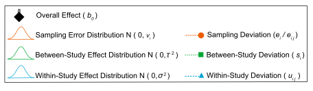
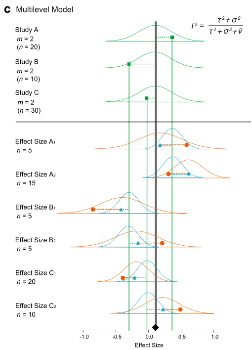

Multilevel Models
First read our introduction to meta analysis and become familiar with commonly used statistical models for meta-analysis. Now, we consider more complex models.
More complex models
Up to now, we have completely ignored non-independence among effect sizes. We assumed that we have one effect size from one study (or paper). But in reality, a paper usually contains multiple effect sizes. These effect sizes from the same studies are not independent of each other. Let’s consider a model where we have several effect sizes from single studies like our data set. First, I give you a math representation:
\[\begin{equation} y_{ij}=b_0+s_i+u_{ij}+e_{ij} \\ s_i\sim \mathcal{N}(0,\tau^2)\ \\ u_{ij}\sim \mathcal{N}(0,\sigma^2)\ \\ e_{ij}\sim \mathcal{N}(0,v_{ij})\ \end{equation}\]
where \(u_{ij}\) is a deviation from \(s_i\) (the within-study effect; the \(j\)th effect size from the \(i\)th study),it is normally distributed with \(\sigma^2\) (other notations are comparable as above).
We can visualize this (again Figure 4 from Nakagawa et al. 2017). And we can see why this model is called, a ‘multilevel’ meta-analytic model, an extension of the random-effects model.

We can fit an equivalent model using the function rma.mv. We need to add paper (the between-study effect) and id (different effect sizes; the within-study effect) in our data set to the multilevel model as random factors.
multilevel_m <- rma.mv(yi = yi, V = vi, random = list(~1 | paper, ~1 | id), method = "REML",
data = dat)
summary(multilevel_m)##
## Multivariate Meta-Analysis Model (k = 102; method: REML)
##
## logLik Deviance AIC BIC AICc
## 7.1102 -14.2204 -8.2204 -0.3750 -7.9730
##
## Variance Components:
##
## estim sqrt nlvls fixed factor
## sigma^2.1 0.0015 0.0392 29 no paper
## sigma^2.2 0.0248 0.1573 102 no id
##
## Test for Heterogeneity:
## Q(df = 101) = 769.0185, p-val < .0001
##
## Model Results:
##
## estimate se zval pval ci.lb ci.ub
## 0.2578 0.0222 11.6046 <.0001 0.2142 0.3013 ***
##
## ---
## Signif. codes: 0 '***' 0.001 '**' 0.01 '*' 0.05 '.' 0.1 ' ' 1OK, this does not have \(I^2\). We have actually proposed a multilevel-model version of \(I^2\) (Nakagawa & Santos 2012), which, in this case, can be written as:
\[\begin{equation} I^2=\frac{\tau^2+\sigma^2}{(\tau^2+\sigma^2+\bar{v})}, \end{equation}\]
Note that we do have \(\tau^2\) and \(\sigma^2\), which are sigma^2.1 and sigma^2.2 in the output above, respectively. Using this formula, we have the total heterogeneity \(I^2\) of 88.93% (the \(\bar{v} = 0.0033\) for our data set; see Nakagawa & Santos 2012 for how to get this). As you might expect, this value is nearly identical to what we got from the random-effect model (88.9%). But this model is better as we are explicitly dealing with non-independence arising from effect sizes from the same studies (although it turns out the problem is not completely solved…).
As you could probably imagine, we can add more levels to this multilevel models. For example, we could add genus in the data set, as related species are probably more similar to each other. But it is better to model this taxonomic non-independence using phylogeny (which is the topic of the next section). Note that we can also run meta-regression using rma.mv; more complex models (different versions of a multilevel model) are explained in Nakagawa & Santos (2012).
Phylogenetic meta-analysis
As I just mentioned, we have, so far, also ignored another type of non-independence, i.e. phylogenetic relatedness. Chuck Darwin unfortunately (or fortunately) found out all species on earth are related so we need to deal with this issue.
Actually, we just need to model phylogenetic non-independence by adding the degree of relatedness among species as a correlation matrix. The term, phylogeny or phylo, which we will create below, can be added as a random factor to a multilevel model.
This means that we need a phylogenetic tree for our data set. For this data set, we have prepared a tree for you to download here. But it is not that difficult to get a tree together by using the package called rotl.
First install and load the package ape that we will use to import the tree file and visualise the phylogeny.
library(ape)
tree <- read.tree(file = "tree_curtis1998.tre")
plot(tree, cex = 0.7)
We can then make a correlation matrix (a relatedness matrix among species). I’ve skipped explantions of these operations - other than saying we have a correlation matrix to fit to the model
tree <- compute.brlen(tree)
cor <- vcv(tree, cor = T)We need a bit more preparation as we do have not a column which has the whole species names (we call it phylo). Also, it turns out that we need to correct some typos in genus and species columns in our data.
library(Hmisc)
phylo <- tolower(paste(dat$genus, dat$species, sep = "_"))
# note: 'populusx_euramericana' should be same as 'populus_euramericana'
phylo <- gsub("populusx_euramericana", "populus_euramericana", phylo)
# these two species are the two different names of the same species
phylo <- gsub("nothofagus_fusca", "fuscospora_fusca", phylo)
phylo <- capitalize(phylo)
dat[, "phylo"] <- phyloWe now have our phylogenetic correlation cor and a column with species names phylo, and can run our meta-analysis again with a phylogenetic effect.
phylo_m <- rma.mv(yi = yi, V = vi, random = list(~1 | phylo, ~1 | paper, ~1 | id),
R = list(phylo = cor), method = "REML", data = dat)
summary(phylo_m)##
## Multivariate Meta-Analysis Model (k = 102; method: REML)
##
## logLik Deviance AIC BIC AICc
## 7.1102 -14.2204 -6.2204 4.2401 -5.8037
##
## Variance Components:
##
## estim sqrt nlvls fixed factor R
## sigma^2.1 0.0000 0.0000 36 no phylo yes
## sigma^2.2 0.0015 0.0392 29 no paper no
## sigma^2.3 0.0248 0.1573 102 no id no
##
## Test for Heterogeneity:
## Q(df = 101) = 769.0185, p-val < .0001
##
## Model Results:
##
## estimate se zval pval ci.lb ci.ub
## 0.2578 0.0222 11.6046 <.0001 0.2142 0.3013 ***
##
## ---
## Signif. codes: 0 '***' 0.001 '**' 0.01 '*' 0.05 '.' 0.1 ' ' 1All this effort, there is no variation due to phylogeny! So we do not need this phylogeny term (i.e. phylo).
Also, this multilevel model can be considered as a comparative phylogenetic method. There are quite a few things you need to know and to be careful of, which I cannot cover (e.g. we assumed that the Brownian-motion model of evolution in the model above - what does this even mean?). But Will and I have written a nice ‘primer’ so please read that primer – Cornwell & Nakagawa (2017)
Unfortunately, there are other types of non-independence from what covered here. We summaries all types in our recent paper – Noble et al. (2017). So read this as well if you are interested.
Complex robust models (the last section!)
We have a multilevel version of the robust model too. It is easy to fit using the function rma.mv (we do not include phylo as it did not explain any variance).
# you can put a marix or vector to W which is equivalent to 'weights' in rma
robustml_m <- rma.mv(yi = yi, V = vi, W = wi, random = list(~1 | paper, ~1 | id),
method = "REML", data = dat)
summary(robustml_m)##
## Multivariate Meta-Analysis Model (k = 102; method: REML)
##
## logLik Deviance AIC BIC AICc
## 4.6819 -9.3639 -3.3639 4.4815 -3.1165
##
## Variance Components:
##
## estim sqrt nlvls fixed factor
## sigma^2.1 0.0015 0.0392 29 no paper
## sigma^2.2 0.0248 0.1573 102 no id
##
## Test for Heterogeneity:
## Q(df = 101) = 769.0185, p-val < .0001
##
## Model Results:
##
## estimate se zval pval ci.lb ci.ub
## 0.2088 0.0483 4.3200 <.0001 0.1141 0.3036 ***
##
## ---
## Signif. codes: 0 '***' 0.001 '**' 0.01 '*' 0.05 '.' 0.1 ' ' 1I think this is the model we have been looking for, i.e. our final model. At least for this data set.
Further help (references)
Any questions? Or email me (s(-dot-)nakagawa(-at-)unsw(-dot-)edu(-dot-)au). Also visit our website
Go to the metafor package’s website. There you find many worked examples.
Cornwell, W., and S. Nakagawa. 2017. Phylogenetic comparative methods. Current Biology 27:R333-R336.
Nakagawa, S., D. W. A. Noble, A. M. Senior, and M. Lagisz. 2017. Meta-evaluation of meta-analysis: ten appraisal questions for biologists. BMC Biology 15:18.
Nakagawa, S., and E. S. A. Santos. 2012. Methodological issues and advances in biological meta-analysis. Evolutionary Ecology 26:1253-1274.
Noble, D. W. A., M. Lagisz, R. E. O’Dea, and S. Nakagawa. 2017. Nonindependence and sensitivity analyses in ecological and evolutionary meta-analyses. Molecular Ecology 26:2410-2425.
Authors: Shinichi Nakagawa and Malgorzata (Losia) Lagisz
Last updated:
## [1] "Mon Jan 24 13:04:16 2022"